1.Cómo usar este manual
Este manual le enseña, paso a paso, a trabajar con el Capataz como Operador. No necesita tener experiencia con computadoras: todo se explica con calma y con imágenes de la pantalla.
Lea los capítulos en orden la primera vez. Después podrá volver solo al capítulo que necesite. Al final del manual hay un glosario con el significado de las palabras del oficio y una hoja de teclas rápidas que puede imprimir y pegar junto a la balanza.
1.1Qué puede hacer un Operador
Cada persona entra al sistema con su propio usuario. Lo que puede hacer depende de su rol. Con el rol de Operador usted puede:
Pesar reses (res completa o media res, según lo que pese su empresa) y grabar cada pesaje como una boleta.
Imprimir la boleta y volver a imprimirla cuando haga falta.
Ver el historial de los pesajes de cualquier día.
Crear un ganadero o un cliente nuevo desde la misma pantalla de pesaje.
Cambiar su propia contraseña.
Usted no puede corregir ni anular una boleta ya grabada, ver reportes, administrar las listas de ganaderos, clientes y fleteros, ni configurar la balanza o la impresora. Esas tareas son de su supervisor o de su administrador del sistema. Las opciones que no son para su rol simplemente no aparecen en pantalla.
1.2Cómo leer los pasos
Las tareas se explican con pasos numerados. Cada paso es una sola acción. Haga un paso, mire la pantalla y recién entonces pase al siguiente.
Lo que está escrito en negrita es un texto que usted verá en la pantalla: el nombre de un botón, de un campo o de un menú, o un mensaje. Búsquelo en la pantalla tal como está escrito.
Las teclas se dibujan así: Enter, F5. Búsquelas en el teclado de la computadora. Cuando dos teclas están unidas con un «+», como Ctrl+Shift+L, se pulsan al mismo tiempo.
En las imágenes verá círculos rojos con un número y un recuadro rojo. El número es el mismo que se menciona en el paso: «círculo 1» quiere decir que mire el círculo rojo con el número 1.
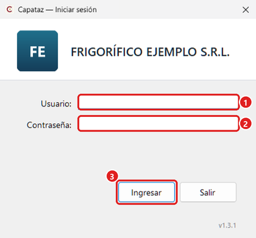
Además hay tres tipos de recuadros de colores:
Este recuadro avisa de algo que no debe olvidar. Léalo siempre.
Este recuadro dice qué hacer si el sistema muestra un mensaje de problema o si algo no sale como se espera.
Este recuadro da una ayuda que le ahorra tiempo.
1.3El mouse y el teclado
Para usar el sistema basta con conocer estas palabras y estas teclas.
| Palabra | Qué significa |
|---|---|
| Hacer clic | Mover el mouse hasta un lugar de la pantalla y pulsar una vez el botón izquierdo. |
| Doble clic | Pulsar el botón izquierdo dos veces seguidas, rápido. En este manual casi nunca hace falta. |
| Ventana | Cada «hoja» que se abre en la pantalla, con su nombre arriba. |
| Menú | Las palabras que están en la franja de arriba de la ventana principal (Pesaje, Boletas, Sesión, Ayuda). Al hacer clic en una se despliega una lista de opciones. |
| Botón | Un rectángulo con un texto, como Ingresar. Se pulsa haciendo clic. |
| Campo | Un recuadro blanco donde se escribe, como el de su usuario. Primero se hace clic dentro del recuadro y luego se escribe. |
| Lista desplegable | Un campo con una flechita a la derecha. Al hacer clic se abre una lista y se elige una opción con un clic. |
| Tecla | Para qué sirve |
|---|---|
| Enter | Es la tecla grande de «aceptar». Confirma lo que escribió y, en muchas pantallas, pasa al campo siguiente. |
| Tab | Está a la izquierda de la letra Q y tiene dos flechas. Pasa al campo siguiente. |
| Esc | Está en la esquina de arriba a la izquierda. Cierra la ventana o cancela. |
| F2, F3, F5… | Son las teclas de la fila de arriba del teclado. Cada una hace una tarea rápida. Por ejemplo, F12 graba el pesaje. |
| Flechas | Las flechas hacia arriba y hacia abajo mueven la selección dentro de una lista. |
En algunas computadoras portátiles las teclas F2, F5… sirven para subir el volumen o el brillo. Si pulsa F5 y no pasa lo esperado, mantenga pulsada también la tecla Fn (abajo a la izquierda) y vuelva a pulsar F5.
2.Abrir el sistema e iniciar sesión
2.1Abrir el sistema
Busque en el escritorio de Windows el icono Capataz y haga doble clic. Si no está en el escritorio, abra el menú Inicio de Windows y busque el mismo nombre.
Espere unos segundos hasta que aparezca la pantalla Iniciar sesión.
Si aparece el mensaje El sistema ya está en ejecución en este equipo (puede estar abierto en la sesión de otro usuario de Windows)., el sistema ya está abierto en esta computadora. Solo puede haber uno abierto a la vez. Espere unos segundos si lo acaba de abrir. Si sigue el mensaje, busque la ventana abierta en la barra de abajo de Windows o consulte a su administrador del sistema.
2.2Iniciar sesión
Haga esto cada vez que empiece a trabajar. Necesita su usuario y su contraseña, que le entrega su administrador del sistema. En la parte de arriba de la pantalla verá el logo y el nombre de su empresa.
Haga clic en el campo Usuario (círculo 1) y escriba su usuario.
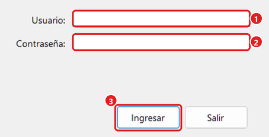
Figura 2. Campos de la pantalla Iniciar sesión, vacíos y listos para escribir 1Escriba su usuario2Escriba su contraseña3Pulse IngresarPulse Tab (o haga clic en el campo Contraseña, círculo 2) y escriba su contraseña. Mientras escribe verá solo puntos: es normal.
Pulse Enter o haga clic en Ingresar (círculo 3).
Espere a que se abra la pantalla de inicio (ver el capítulo siguiente).
Su contraseña es personal. No la comparta ni la deje escrita a la vista. Todo lo que usted registra queda guardado con su nombre.
Si debajo de la contraseña aparece el aviso Bloq Mayús está activado, la tecla de mayúsculas fijas está encendida y las letras se escribirán en mayúscula. La contraseña distingue mayúsculas de minúsculas: apague Bloq Mayús y vuelva a escribirla.
Si el sistema no lo deja entrar
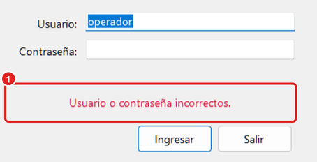
Si aparece en rojo Usuario o contraseña incorrectos. (círculo 1), el usuario o la contraseña no coinciden. El sistema vacía el campo de la contraseña.
Revise que el usuario esté bien escrito y que Bloq Mayús esté apagado.
Escriba la contraseña otra vez y pulse Enter.
Si no la recuerda, consulte a su administrador del sistema.
Si aparece Ingrese usuario y contraseña., dejó vacío el usuario o la contraseña. Escriba los dos datos.
Si se equivoca 5 veces seguidas, el sistema bloquea su usuario durante 5 minutos y muestra Usuario bloqueado temporalmente por intentos fallidos. Intente de nuevo en 5 minuto(s). Durante ese tiempo no entra ni con la contraseña correcta. Espere esos minutos o pida a su administrador del sistema que restablezca su contraseña.
Si aparece El usuario está desactivado. Contacte al administrador., su usuario fue dado de baja. Consulte a su administrador del sistema.
2.3Primer ingreso: cambiar la contraseña
La primera vez que entra, o cuando el administrador le restablece la contraseña, el sistema le pide que elija una contraseña propia antes de continuar. Aparece la ventana Debe cambiar su contraseña para continuar.
En Contraseña actual (círculo 1) escriba la contraseña que le dieron.

Figura 4. Ventana Debe cambiar su contraseña para continuar 1Contraseña actual2Nueva contraseña3Repita la nueva contraseña4Pulse AceptarPulse Tab y, en Nueva contraseña (círculo 2), escriba la contraseña que usted elige.
Pulse Tab y, en Confirmación (círculo 3), escriba la misma contraseña nueva otra vez.
Haga clic en Aceptar (círculo 4).
Su contraseña nueva debe cumplir tres reglas:
Tener entre 6 y 100 caracteres.
No ser igual a su nombre de usuario.
No ser igual a la contraseña que tenía hasta ahora.
Elija una contraseña que usted recuerde y que otras personas no puedan adivinar. No use su nombre de usuario.
Si algún dato no cumple, aparece un icono rojo junto al campo. Deje el mouse quieto sobre el icono y se lee el motivo, por ejemplo La contraseña debe tener entre 6 y 100 caracteres., La contraseña no puede ser igual al nombre de usuario., La nueva contraseña debe ser distinta de la actual., La confirmación no coincide con la contraseña. o La contraseña actual es incorrecta. Los tres campos se vacían: vuelva a escribirlos.
Si pulsa Cancelar, el sistema vuelve a la pantalla Iniciar sesión y no podrá trabajar hasta cambiar la contraseña.
2.4Cambiar la contraseña cuando quiera
Puede cambiar su contraseña en cualquier momento, por ejemplo si cree que otra persona la conoce.
En la pantalla de inicio, haga clic en el menú Sesión y luego en Cambiar contraseña… (círculo 1).
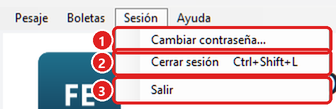
Figura 5. Menú Sesión desplegado con sus tres opciones 1Cambiar contraseña…Escriba su Contraseña actual, la Nueva contraseña y la Confirmación, igual que en la sección anterior.
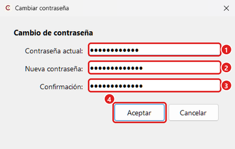
Figura 6. Ventana Cambiar contraseña con los tres campos llenos 1Contraseña actual2Nueva contraseña3Repita la nueva contraseña4Pulse AceptarHaga clic en Aceptar (círculo 4).
3.La pantalla de inicio
Después de iniciar sesión se abre la pantalla de inicio. Desde aquí se llega a todo lo que usted puede hacer.
3.1Qué ve en la pantalla
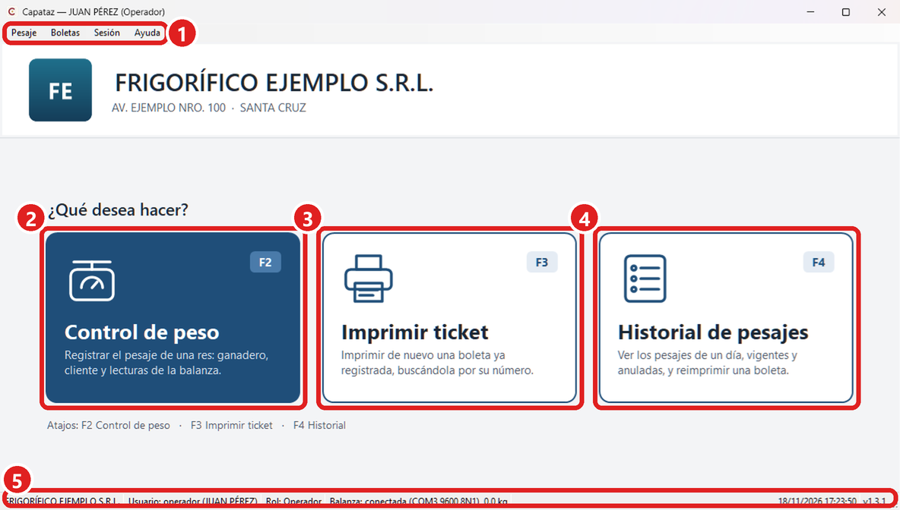
Arriba, la franja de menús (círculo 1): Pesaje, Boletas, Sesión y Ayuda. En el borde superior de la ventana aparece su nombre y su rol.
En el centro, tres tarjetas grandes con las tareas del día: Control de peso (círculo 2), Imprimir ticket (círculo 3) e Historial de pesajes (círculo 4).
Abajo, la barra de estado (círculo 5): el nombre de la empresa, su usuario y su rol, el estado de la balanza con el peso actual, la fecha y la hora, y la versión del sistema.
3.2Las tres tarjetas
Para abrir una tarjeta haga clic sobre ella. También puede pulsar la tecla que muestra en su esquina. Cuando el sistema abre, la tarjeta Control de peso ya está seleccionada: basta pulsar Enter para empezar a pesar.
| Tarjeta | Para qué sirve | Tecla | Capítulo |
|---|---|---|---|
| Control de peso | Registrar el pesaje de una res y grabar su boleta. | F2 | Registrar un pesaje |
| Imprimir ticket | Volver a imprimir una boleta que ya está registrada, buscándola por su número. | F3 | Reimprimir una boleta |
| Historial de pesajes | Ver los pesajes de un día y reimprimir uno. | F4 | Historial de pesajes |
Debajo de las tarjetas, el sistema escribe una línea con sus atajos: Atajos: F2 Control de peso · F3 Imprimir ticket · F4 Historial. Son las mismas tres teclas que muestran las tarjetas. Esa línea solo nombra las teclas que su rol puede usar.
3.3Los menús que usted ve
Haga clic en el nombre de un menú para ver sus opciones.
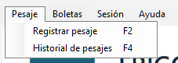
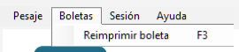
| Menú | Opciones | Tecla |
|---|---|---|
| Pesaje | Registrar pesaje | F2 |
| Historial de pesajes | F4 | |
| Boletas | Reimprimir boleta | F3 |
| Sesión | Cambiar contraseña… | |
| Cerrar sesión | Ctrl+Shift+L | |
| Salir | ||
| Ayuda | Acerca de… |
La opción Ayuda › Acerca de… muestra la versión del sistema y el nombre de esta computadora. Si algún día necesita pedir ayuda, su administrador del sistema puede pedirle esos datos.
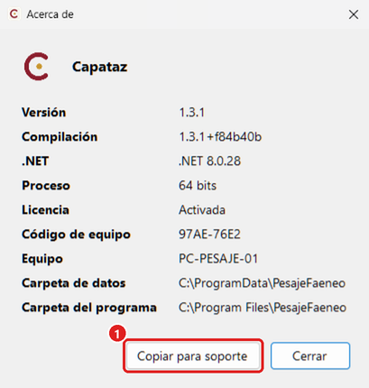
Si pulsa Copiar para soporte (círculo 1), el sistema copia esos datos para que su administrador del sistema los pueda pegar en un mensaje.
3.4El indicador de la balanza
En la barra de estado, abajo, el sistema le dice siempre si la balanza está funcionando y cuánto pesa. Mírelo antes de empezar a pesar. Lo ideal es verlo en verde.
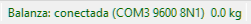
El color y el texto le dicen qué ocurre y qué hacer:
| Color | Texto | Qué significa | Qué hacer |
|---|---|---|---|
| Verde | Balanza: conectada (…) y el peso | La balanza funciona y el peso está estable. | Nada: puede pesar. |
| Negro | Balanza: conectada (…) y el peso | La balanza funciona, pero el peso todavía se mueve. | Espere a que la res deje de balancearse. |
| Rojo | Balanza: sin datos | La balanza no está enviando nada. | Revise que el indicador de la balanza esté encendido y que el cable esté firme. Si sigue en rojo, avise a su administrador del sistema. |
| Rojo | Balanza: tramas no reconocidas | Llegan datos, pero el sistema no los entiende. | Avise a su administrador del sistema. |
| Rojo | Balanza: error — … | Se perdió la conexión; el mensaje dice el motivo. | Espere unos segundos: el sistema intenta conectarse solo. Si sigue en rojo, avise a su administrador del sistema. |
| Gris | Balanza: iniciando…, conectando…, detenida o en diagnóstico | La balanza se está preparando o el administrador la está probando. | Espere. Si conectando… no termina, avise a su administrador del sistema. |
| Fondo naranja | Texto que empieza con [SIMULADOR] | La balanza es de práctica: los pesos no son reales. | No pese. Avise a su administrador del sistema. |
Así se ven los otros estados:
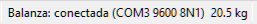
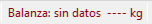
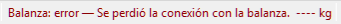
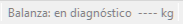
Con la balanza en rojo, en gris o con el peso moviéndose no se puede capturar un peso. Es una protección del sistema: no intente buscar otra forma, resuelva primero el estado de la balanza.
4.Registrar un pesaje
Este es el trabajo principal del Operador. Cada pesaje que usted graba se convierte en una boleta con un número único.
4.1Cómo es un pesaje, de principio a fin
Abre la pantalla de pesaje.
Elige el ganadero y el cliente.
Revisa los demás datos del animal.
Pone la res en la balanza y captura el peso de cada lado.
Comprueba que el sistema dice que está Listo para grabar.
Graba el pesaje con F12.
Imprime la boleta.
En las secciones siguientes se explica cada paso con detalle.
4.2Abrir la pantalla de pesaje
En la pantalla de inicio, haga clic en la tarjeta Control de peso.
Si lo prefiere, pulse F2, o abra el menú Pesaje y elija Registrar pesaje.
Se abre la ventana Registro de pesaje, que ocupa toda la pantalla.
Esta es la ventana donde pasará la mayor parte de su jornada.
4.3Las partes de la pantalla
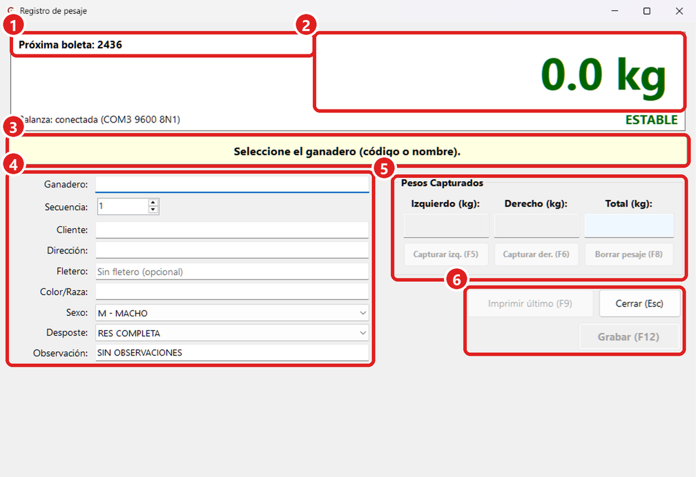
| Círculo | Zona | Qué muestra |
|---|---|---|
| 1 | Próxima boleta | El número que tendrá la próxima boleta que grabe. Lo pone el sistema; usted no lo escribe. |
| 2 | Peso en vivo | El peso que marca la balanza ahora, en letra grande, con la palabra ESTABLE o INESTABLE debajo. Abajo a la izquierda se repite el estado de la balanza. |
| 3 | Línea de guía | Una frase que le dice qué hacer a continuación. Cambia de color: amarillo suave (aviso), verde (todo bien) o rojo (problema). Léala siempre. |
| 4 | Datos del animal | Ganadero, Secuencia, Cliente, Dirección, Fletero, Color/Raza, Sexo, Desposte (solo si su empresa pesa los dos tipos) y Observación. |
| 5 | Pesos Capturados | Los pesos Izquierdo (kg), Derecho (kg) y Total (kg), y los botones Capturar izq. (F5), Capturar der. (F6) y Borrar pesaje (F8). |
| 6 | Botones de acción | Grabar (F12), Imprimir último (F9) y Cerrar (Esc). |
Dentro de los datos del animal, la tecla Enter pasa al campo siguiente, igual que Tab. Puede llenar toda la pantalla sin soltar el teclado.
4.4Elegir el ganadero
El ganadero es la persona que entrega el animal. Se elige buscándolo por su código (un número que le puso el sistema) o por su nombre. No hace falta escribirlo completo.
Haga clic en el campo Ganadero (círculo 1). Si acaba de abrir la pantalla, ya está seleccionado.
Escriba parte del nombre o el código. Por ejemplo, escriba «san».
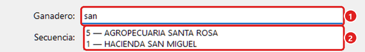
Figura 17. Campo Ganadero con la lista de coincidencias desplegada 1Escriba parte del nombre o el código2Lista de coincidenciasMire la lista de coincidencias (círculo 2). Cada línea muestra el código, una raya larga y el nombre, por ejemplo 5 — AGROPECUARIA SANTA ROSA.
Haga clic en la línea que corresponde. Si prefiere el teclado, pulse la flecha hacia abajo hasta resaltar la línea (círculo 1 de la figura siguiente) y pulse Enter.
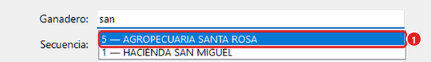
Figura 18. Primera coincidencia resaltada en azul, lista para elegir con Enter 1Línea resaltada: pulse Enter para elegirlaCompruebe que el campo muestra el código y el nombre completos, como 5 — AGROPECUARIA SANTA ROSA (círculo 1 de la figura de la sección siguiente).
Si usted sabe el código, escríbalo y pulse Enter: el sistema elige directamente a ese ganadero. La búsqueda no distingue mayúsculas de minúsculas ni acentos.
Si escribe parte del nombre y pasa al campo siguiente sin elegir una línea de la lista, el sistema elige al ganadero por usted solo cuando hay una sola coincidencia. Si hay varias, el ganadero no queda elegido y la guía sigue diciendo Seleccione el ganadero (código o nombre). Vuelva al campo y elija una línea de la lista. Mientras no haya ganadero elegido no se puede grabar.
Si el ganadero no existe en la lista, vea la sección Si el ganadero o el cliente es nuevo: alta rápida, más abajo.
4.5Revisar la secuencia
Apenas elige al ganadero, el sistema completa solo el campo Secuencia. La secuencia es el número de orden del animal de ese ganadero en el día: el primero que pesa hoy es el 1, el segundo el 2, y así. Al lado, el sistema escribe cuántos pesajes ya tiene hoy ese ganadero, por ejemplo Hoy: 1 pesaje(s) de este ganadero.
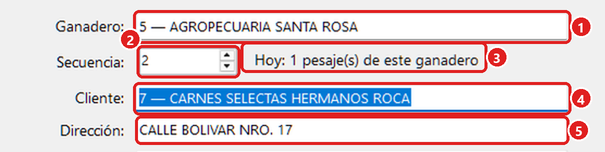
Mire el campo Secuencia (círculo 2). El número ya está sugerido.
Lea el aviso de al lado (círculo 3) para confirmar cuántos animales de ese ganadero se pesaron hoy.
Deje el número que sugiere el sistema. Cámbielo solo si su supervisor se lo indica: en ese caso escriba el número que le diga o use las flechitas del campo (entre 1 y 9999).
Si elige otro ganadero, el sistema vuelve a sugerir la secuencia de ese ganadero y reemplaza el número que haya escrito. Cambie la secuencia después de elegir al ganadero.
Si al lado de la secuencia aparece No se pudo sugerir la secuencia; ingrésela manualmente., el sistema no pudo calcular el número. Pregunte a su supervisor qué número corresponde y escríbalo en Secuencia.
4.6Elegir el cliente y revisar la dirección
El cliente es quien recibe la carne. Se elige igual que el ganadero.
Desde Secuencia, pulse Enter (o Tab) para pasar al campo Cliente (círculo 4 de la figura anterior).
Escriba parte del nombre o el código y elija la línea correcta, como 7 — CARNES SELECTAS HERMANOS ROCA.
Mire el campo Dirección (círculo 5): el sistema escribe solo la dirección del cliente.
Si esta entrega va a otra dirección, borre el texto y escriba la dirección correcta. Se escribe en mayúsculas automáticamente (hasta 150 letras).
Si no elige un cliente de la lista, la guía dice Seleccione el cliente (código o nombre). y no se puede grabar.
4.7Si el ganadero o el cliente es nuevo: alta rápida
Si el ganadero o el cliente todavía no existe en el sistema, usted mismo puede crearlo sin salir de la pantalla de pesaje.
En Ganadero (o en Cliente) escriba el nombre completo del ganadero nuevo.
Mire la lista: cuando ya no aparece ninguna coincidencia (la lista se cierra), pulse Enter. Mientras haya coincidencias, Enter no crea uno nuevo: elige la única coincidencia o resalta la primera de la lista. En ese caso siga escribiendo el nombre completo.
Se abre la ventana Alta rápida de ganadero con lo que usted escribió ya cargado en Nombre.
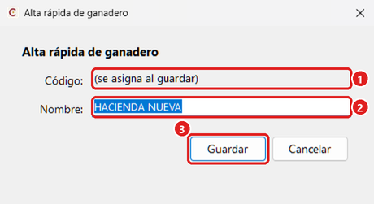
Figura 20. Ventana Alta rápida de ganadero con el código automático y el nombre escrito 1El código lo asigna el sistema2Nombre del ganadero3Pulse GuardarMire Código (círculo 1): dice (se asigna al guardar). El sistema le pone el número solo; usted no lo escribe.
Revise el Nombre (círculo 2). Corrija si hace falta: debe tener entre 3 y 100 caracteres.
Haga clic en Guardar (círculo 3).
La ventana se cierra y el ganadero nuevo queda elegido en el pesaje.
Para un cliente nuevo la ventana se llama Alta rápida de cliente. Es igual, y además tiene un campo Dirección, que puede dejar vacío.
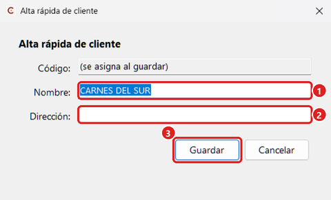
Revise el Nombre (círculo 1).
Si la sabe, escriba la Dirección (círculo 2).
Haga clic en Guardar (círculo 3). El cliente queda elegido y su dirección se copia al pesaje.
Si cambia de opinión, haga clic en Cancelar: no se crea nada.
Antes de crear uno nuevo, busque bien con otras partes del nombre. Si crea dos veces al mismo ganadero con distinta escritura, quedan como dos personas distintas en el sistema.
Un Operador puede crear ganaderos y clientes, pero no corregirlos. Si se equivoca al escribir un nombre, avise a su supervisor: él puede corregirlo.
Si el nombre es demasiado corto o está vacío, aparece un icono rojo junto al campo con el mensaje Ingrese el nombre (3 a 100 caracteres). Escriba un nombre válido y pulse Guardar otra vez.
4.8Elegir el fletero (opcional)
El fletero es la persona que transporta la carne. Su nombre sale impreso en la boleta. Es opcional: si este pesaje no lleva fletero, deje el campo vacío.
Pulse Enter (o Tab) hasta llegar al campo Fletero, que muestra Sin fletero (opcional).
Escriba parte del nombre o el código.
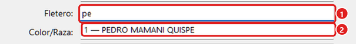
Figura 22. Campo Fletero con una coincidencia en la lista 1Escriba parte del nombre o el código2Línea del fletero: haga clic para elegirlaHaga clic en la línea correcta (círculo 2), por ejemplo 1 — PEDRO MAMANI QUISPE, o resáltela con la flecha hacia abajo y pulse Enter.
Compruebe que el campo muestra el código, una raya larga y el nombre completo, por ejemplo 1 — PEDRO MAMANI QUISPE.
Elija siempre el fletero de la lista (con un clic o con la flecha y Enter). Si escribe parte del nombre y pasa al campo siguiente sin elegirlo, el sistema lo elige por usted solo cuando hay una sola coincidencia. Si hay varias o ninguna, el fletero no queda elegido y el sistema no le deja grabar hasta que usted lo resuelva: lo elige de la lista o borra el texto del campo. Con el campo vacío, la boleta se graba sin fletero.
Si dejó texto escrito en Fletero sin elegirlo de la lista, la guía se pone en amarillo y dice Elija el fletero de la lista o borre el texto. (círculo 2), y el botón Grabar (F12) queda en gris (círculo 3) aunque ya tenga los pesos. Para seguir:
Vuelva al campo Fletero (círculo 1).
Elija la línea correcta de la lista, o borre todo el texto del campo si este pesaje no lleva fletero.
Cuando la guía cambie y el botón Grabar (F12) se ponga verde, pulse F12.
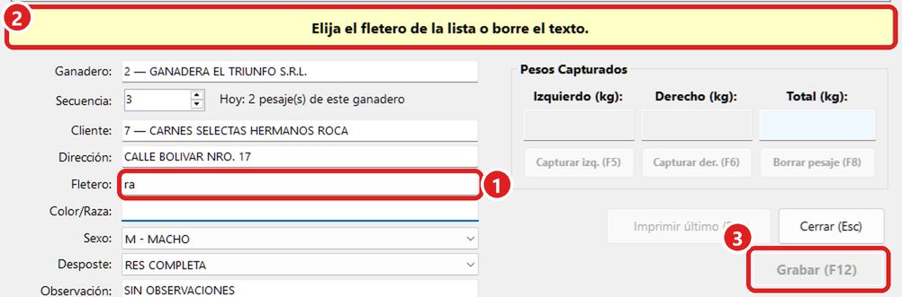
El fletero se borra solo después de cada grabado: hay que elegirlo en cada pesaje. Si se equivoca de fletero, borre el texto del campo con la tecla de borrar y elija otro.
Si el fletero no aparece en la lista, no se puede crear desde esta pantalla. Avise a su supervisor para que lo agregue y, mientras tanto, pese sin fletero.
4.9Color/Raza, Sexo, Desposte y Observación
Estos cuatro campos completan los datos del animal.
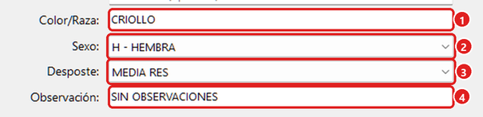
| Campo | Qué hacer |
|---|---|
| Color/Raza (círculo 1) | Escriba el color o la raza del animal, por ejemplo NELORE o CRIOLLO. Es un texto libre de hasta 30 letras. Si no hay dato, puede dejarlo vacío. |
| Sexo (círculo 2) | Haga clic en la lista y elija M - MACHO o H - HEMBRA. |
| Desposte (círculo 3) | Elija RES COMPLETA (se pesan los dos lados) o MEDIA RES (se pesa un solo lado). Si su empresa pesa un solo tipo, este campo no aparece: el tipo ya está fijo. |
| Observación (círculo 4) | Puede traer ya un texto escrito, por ejemplo SIN OBSERVACIONES o SIN NOVEDAD (lo define su administrador del sistema). Cámbielo solo si necesita anotar algo, hasta 250 letras. |
Todo lo que escribe en estos campos se convierte automáticamente en mayúsculas.
Después de grabar un pesaje, el Sexo y el Desposte quedan como estaban, para que el siguiente animal sea más rápido. Revíselos en cada animal: si el siguiente es hembra o media res, cámbielos antes de capturar.
4.10Pesar una res completa
La res completa se pesa en dos lados: primero el izquierdo y después el derecho. Antes de empezar, compruebe que la balanza esté en verde y que haya elegido el ganadero y el cliente.
Compruebe que en Desposte diga RES COMPLETA. Si el campo Desposte no aparece, su empresa pesa solo res completa: siga con el paso siguiente.
Coloque en la balanza el lado izquierdo de la res.
Mire el peso grande de arriba (círculo 1) y espere a que debajo diga ESTABLE en verde (círculo 2).
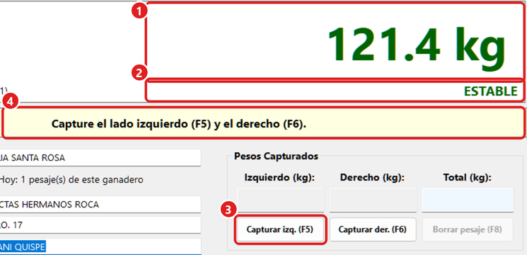
Figura 25. Peso estable de 121,4 kg y botones de captura listos 1Peso en vivo2ESTABLE: ya se puede capturar3Capturar izq. (F5)4Línea de guíaPulse F5, o haga clic en Capturar izq. (F5) (círculo 3). Hasta que usted captura, la guía (círculo 4) dice Capture el lado izquierdo (F5) y el derecho (F6).
Mire Izquierdo (kg) (círculo 1 de la figura siguiente): ahí aparece el peso capturado, y en Total (kg) el mismo valor.
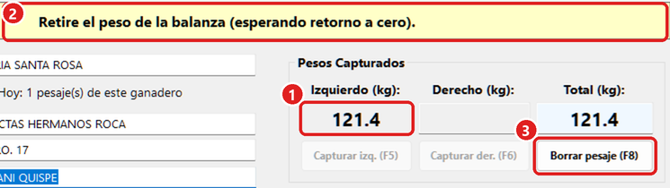
Figura 26. Lado izquierdo capturado: el sistema pide retirar el peso de la balanza 1Peso del lado izquierdo capturado2La guía pide retirar el peso3Borrar pesaje (F8)Lea la guía (círculo 2): dice Retire el peso de la balanza (esperando retorno a cero).
Retire el lado izquierdo de la balanza y espere a que el peso baje a cero (2,0 kg o menos). Mientras baja, la guía puede decir Esperando peso estable…
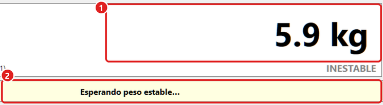
Figura 27. La res ya se retiró: el peso baja hacia cero y la guía pide esperar un peso estable 1El peso baja hacia cero2La guía pide esperar un peso estableColoque en la balanza el lado derecho de la res y espere a que diga ESTABLE.
Pulse F6, o haga clic en Capturar der. (F6).
Compruebe los dos pesos (círculos 1 y 2) y el total (círculo 3), y lea la guía (círculo 5): debe decir Listo para grabar (F12).
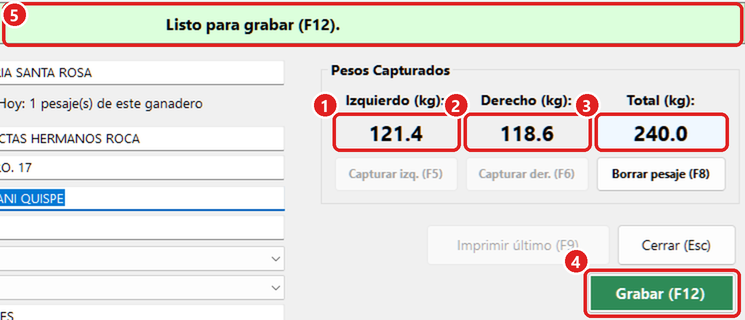
Figura 28. Los dos lados capturados, el total calculado y la guía en verde 1Lado izquierdo2Lado derecho3Total4Grabar (F12)5Listo para grabarPulse F12, o haga clic en Grabar (F12) (círculo 4), para grabar el pesaje.
El sistema le obliga a retirar la res y volver a cero antes de capturar el segundo lado. Es una protección para que no se capture dos veces el mismo lado por accidente. Mientras el peso no baje a 2,0 kg o menos, el botón Capturar der. (F6) no se activa.
Con la balanza vacía (hasta 2,0 kg), la guía no se queja: le dice qué capturar, por ejemplo Capture el lado izquierdo (F5) y el derecho (F6). El mensaje Peso fuera de rango (10,0 a 600,0 kg). aparece solo cuando hay algo estable en la balanza que pesa más de 2,0 kg y menos de 10,0 kg, o más de 600,0 kg.
El pesaje no queda guardado hasta que usted pulsa F12. Si cierra la pantalla antes, los pesos capturados se pierden.
4.11Pesar una media res
La media res se pesa en un solo lado.
En Desposte elija MEDIA RES (círculo 3 de la figura de la sección Color/Raza, Sexo, Desposte y Observación). Si el campo Desposte no aparece, su empresa pesa solo media res: siga con el paso siguiente.
Mire la guía: dice Media res: capture un lado (F5 o F6). (o Capture un lado (F5 o F6). si su empresa pesa solo media res).
Coloque la media res en la balanza y espere a que diga ESTABLE.
Pulse F5 o F6. Cualquiera de los dos sirve: el peso queda en Izquierdo (kg) o en Derecho (kg) y el Total (kg) es ese mismo peso.
Lea la guía: debe decir Listo para grabar (F12).
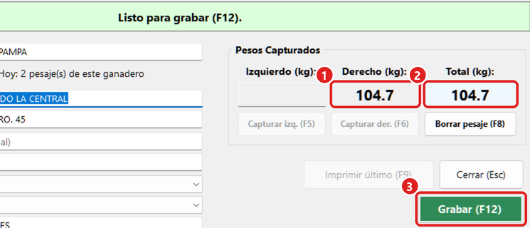
Figura 29. Media res capturada en el lado derecho: el total es ese mismo peso 1Lado capturado2Total3Grabar (F12)Pulse F12 para grabar.
Con media res, una vez capturado un lado, el botón del otro lado se desactiva: no puede capturar los dos.
Si captura los dos lados y después cambia Desposte a MEDIA RES, el pesaje no se puede grabar: la guía no llega a decir Listo para grabar (F12). y muestra Media res: capture solo un lado. Use F8 para borrar el pesaje. Este aviso aparece aunque la res todavía esté sobre la balanza. Pulse F8 y vuelva a pesar.
4.12Pesos permitidos
| Mínimo | Máximo | |
|---|---|---|
| Peso de cada lado | 10,0 kg | 600,0 kg |
En res completa se capturan dos lados y cada uno debe estar dentro de ese rango.
En media res se captura un lado y debe estar dentro de ese rango.
Los pesos se manejan con un decimal (0,1 kg).
Si hay una res en la balanza y su peso estable es menor de 10,0 kg o mayor de 600,0 kg, el sistema no deja capturarlo. Si pesa más de 2,0 kg, la guía dice Peso fuera de rango (10,0 a 600,0 kg). En ese caso no pese ese lado y avise a su supervisor.
En la pantalla de pesaje los pesos pueden verse con punto (121.4) o con coma (121,4), según la configuración regional de Windows de su computadora. En la boleta impresa, en Reimprimir boleta y en el historial siempre salen con coma.
4.13Mensajes de la línea de guía
La línea de guía (justo debajo del peso en vivo) le dice qué falta. Si hay más de una cosa por resolver, muestra primero la más importante. Esta tabla explica cada mensaje.
| Mensaje | Qué significa y qué hacer |
|---|---|
| Seleccione el ganadero (código o nombre). | Falta elegir el ganadero. Elíjalo de la lista. |
| Seleccione el cliente (código o nombre). | Falta elegir el cliente. Elíjalo de la lista. |
| Esperando peso estable… | El peso todavía se mueve. Espere a que diga ESTABLE. |
| Elija el fletero de la lista o borre el texto. | Escribió algo en Fletero y no lo eligió de la lista. Elija una línea de la lista o borre el texto; mientras tanto no se puede grabar. |
| Peso fuera de rango (10,0 a 600,0 kg). | Hay en la balanza un peso estable de más de 2,0 kg y menos de 10,0 kg, o de más de 600,0 kg. No pese esa res y avise a su supervisor. Con la balanza vacía este mensaje no aparece. |
| Capture el lado izquierdo (F5) y el derecho (F6). | Res completa sin ningún peso. Es también lo que verá con la balanza vacía. Capture los dos lados. |
| Capture el lado derecho (F6). | Ya tiene el izquierdo. Falta el derecho. |
| Capture el lado izquierdo (F5). | Ya tiene el derecho. Falta el izquierdo. |
| Media res: capture un lado (F5 o F6). | Media res sin peso. Capture un solo lado. |
| Capture un lado (F5 o F6). | Su empresa pesa solo media res y todavía no capturó. Capture un solo lado. |
| Retire el peso de la balanza (esperando retorno a cero). | Retire el lado que acaba de capturar y espere a que la balanza llegue a cero. |
| Listo para grabar (F12). | Todo está correcto. Pulse F12. |
| … Use F8 para borrar el pesaje. | Los pesos capturados no son coherentes (por ejemplo, dos lados en media res). Aparece aunque la res siga en la balanza. Pulse F8 y vuelva a pesar. |
| Balanza: … No se puede capturar. | La balanza no está conectada (por ejemplo Balanza: sin datos.). Resuelva el estado de la balanza como se explica en la sección «El indicador de la balanza». |
| Balanza en MODO SIMULADOR: solo un administrador puede capturar y grabar. | La balanza es de práctica. Avise a su administrador del sistema. |
Los botones Capturar izq. (F5), Capturar der. (F6), Borrar pesaje (F8), Imprimir último (F9) y Grabar (F12) se ven en gris cuando no se pueden usar. Si un botón está en gris, la línea de guía le explica por qué.
El botón Grabar (F12) se ve verde solo cuando se puede grabar y gris cuando no. La guía le dice qué falta: cuando dice Listo para grabar (F12)., el botón se pone verde y funciona F12.
4.14Si se equivoca antes de grabar: Borrar pesaje
Si capturó un peso equivocado, por ejemplo tomó el lado incorrecto o la res se movió, puede descartar los pesos y empezar de nuevo.
Pulse F8, o haga clic en Borrar pesaje (F8) (círculo 3 de la figura de la balanza que pide retirar el peso).
Los tres pesos (Izquierdo (kg), Derecho (kg) y Total (kg)) quedan en blanco.
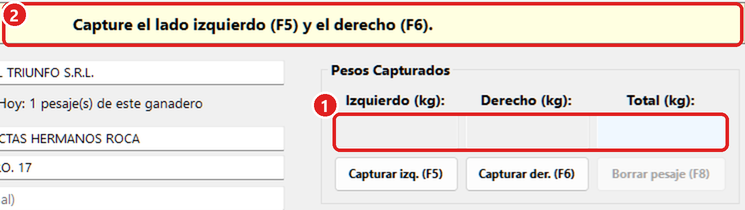
Figura 30. Pesos borrados: los tres cuadros quedan vacíos y la guía pide capturar de nuevo 1Los tres pesos quedan en blanco2La guía vuelve a pedir los ladosLea la guía (círculo 2): vuelve a decir Capture el lado izquierdo (F5) y el derecho (F6).
Vuelva a pesar la res desde el primer lado.
Lo que hace y no hace el botón Borrar pesaje (F8):
Borra los dos pesos capturados, no solo el último.
No borra el ganadero, el cliente ni los demás datos del animal: se mantienen para que no tenga que escribirlos otra vez.
No borra ninguna boleta ya grabada. Solo sirve antes de grabar.
Solo se activa cuando hay algún peso capturado.
Si se equivocó en el ganadero, el cliente u otro dato antes de grabar, cámbielo directamente en su campo: los pesos capturados se mantienen.
4.15Grabar el pesaje y qué pasa después
Compruebe que la guía dice Listo para grabar (F12).
Pulse F12, o haga clic en Grabar (F12).
Espere un instante. Oirá un sonido breve y la guía mostrará, en verde, un mensaje como Boleta N° 2436 grabada — 240.0 kg — impresa. (la boleta se imprimió sola). En la figura, tomada en una computadora sin impresión automática, el mensaje termina en cambio con — pulse F9 para imprimir.
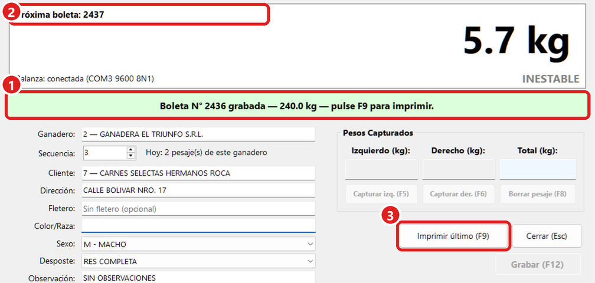
Figura 31. Boleta grabada: la guía confirma el número y el peso, el sistema ya muestra la próxima boleta y se activa Imprimir último (F9) 1Boleta grabada2Próxima boleta3Imprimir último (F9)Anote o recuerde el número de boleta (círculo 1) si debe entregarlo.
Cuando el pesaje se graba:
Los pesos y el campo Color/Raza se borran, y el cursor queda en Color/Raza, listo para el animal siguiente.
El número de Próxima boleta (círculo 2) avanza en uno.
El ganadero, el cliente, la dirección, el sexo y el desposte se mantienen. La Secuencia avanza sola. El fletero se borra y la observación vuelve a su texto de siempre.
El botón Imprimir último (F9) (círculo 3) se activa.
Imprimir la boleta
En las computadoras de pesaje la boleta se imprime sola al grabar. Usted no tiene que hacer nada: la guía termina con — impresa., por ejemplo Boleta N° 2436 grabada — 240.0 kg — impresa.
Si necesita volver a imprimir esa misma boleta, por ejemplo porque se atascó el papel, pulse F9 o haga clic en Imprimir último (F9).
Si la guía dice — pulse F9 para imprimir. en lugar de — impresa., la impresión automática no está activada en esta computadora. Pulse F9 para imprimir la boleta y avise a su administrador del sistema.
El botón Imprimir último (F9) imprime siempre el último pesaje grabado en esta pantalla. Si cierra y vuelve a abrir la pantalla, el botón queda en gris; para imprimir otra boleta use Historial de pesajes o Reimprimir boleta.
Cada impresión queda registrada. La primera impresión de una boleta sale normal. Las siguientes salen con la leyenda REIMPRESIÓN (ver el capítulo «Leyendas que puede ver en una boleta»).
Si la guía dice en rojo Boleta N° 2435 grabada, pero NO se imprimió… Pulse F9 para reintentar., la boleta ya quedó grabada y no se pierde. Revise que la impresora esté encendida, con papel y conectada, y pulse F9. Si sigue sin imprimir, consulte a su administrador del sistema.
Si al pulsar F12 aparece un icono rojo junto a un campo, la boleta no se grabó. Deje el mouse quieto sobre el icono para leer el motivo (por ejemplo El fletero seleccionado no existe o está desactivado.), corrija ese dato y vuelva a pulsar F12. Los pesos capturados se mantienen.
4.16Salir de la pantalla de pesaje
Pulse Esc, o haga clic en Cerrar (Esc).
Si hay pesos capturados que no grabó, aparece la pregunta Hay pesos capturados sin grabar. ¿Desea cerrar de todos modos? Haga clic en No para volver y grabarlos, o en Sí para cerrar y perderlos.
Si todavía no capturó ningún peso, la pantalla se cierra sin preguntar y se pierde lo que haya elegido o escrito. Los datos de un pesaje que no se graba no se guardan en ninguna parte.
Si tiene una lista abierta en Ganadero, Cliente o Fletero, la primera vez que pulse Esc solo se cierra la lista. Pulse Esc otra vez para cerrar la pantalla.
5.Historial de pesajes
El historial muestra todas las boletas de un día, las vigentes y las anuladas. Sirve para revisar lo que se pesó y para volver a imprimir una boleta.
5.1Ver los pesajes de hoy
En la pantalla de inicio, haga clic en la tarjeta Historial de pesajes. También puede pulsar F4 o abrir el menú Pesaje y elegir Historial de pesajes.
Se abre la ventana Historial de pesajes con los pesajes de hoy: el más reciente aparece primero.
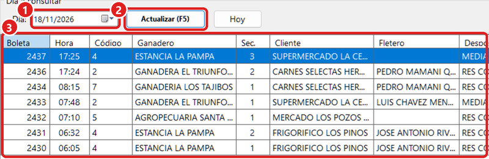
Figura 32. Historial de pesajes de hoy con la fecha, la lista y el resumen 1Día a consultar2Actualizar (F5)3Boletas del díaMire la lista (círculo 3). Cada fila es una boleta.
Mire el resumen de abajo a la izquierda, por ejemplo 7 pesaje(s).
Las columnas de la lista son:
| Columna | Qué muestra |
|---|---|
| Boleta | El número de la boleta. |
| Hora | La hora en que se grabó. |
| Código | El código del ganadero. |
| Ganadero | El nombre del ganadero. |
| Sec. | La secuencia del animal de ese ganadero en el día. |
| Cliente | El nombre del cliente. |
| Fletero | El nombre del fletero, o vacío si no hubo. |
| Desposte | RES COMPLETA o MEDIA RES. Si su empresa pesa un solo tipo, esta columna no aparece (salvo que ese día haya boletas de otro tipo). |
| Izq., Der., Total | Los pesos de cada lado y el total. Un guion largo (—) quiere decir que ese lado no se pesó. |
| Origen | Normalmente vacío. Dice SIMULADO si se pesó con una balanza de práctica o IMPORTADA si viene del sistema anterior. |
| Estado | VIGENTE o ANULADA. |
5.2Ver otro día
Haga clic en la fecha del campo Día (círculo 1) y elija otro día en el calendario que se abre.
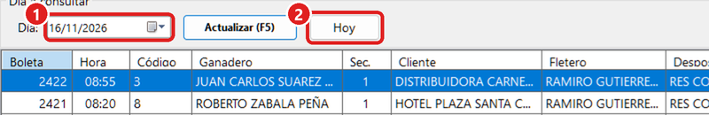
Figura 33. Historial de otro día: se cambió la fecha y la lista se actualizó 1Fecha elegida2Volver a hoyLa lista se actualiza sola. También puede pulsar Actualizar (F5) o la tecla F5.
Para volver al día actual haga clic en Hoy (círculo 2).
Si no hubo pesajes ese día, el resumen dice No hay pesajes en el día elegido. Si el día tiene 500 pesajes o más, el resumen avisa que se muestran solo los últimos 500.
5.3Boletas anuladas
Una boleta anulada es una boleta que un supervisor dejó sin efecto. Conserva su número, pero ya no vale. En el historial se ve con letra gris y el estado ANULADA.
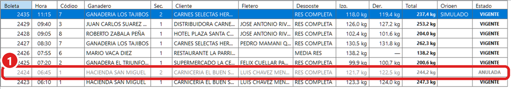
La fila anulada es la del círculo 1. Abajo a la izquierda, el resumen cuenta las dos clases, por ejemplo 8 pesaje(s): 7 vigente(s) y 1 anulada(s).
El número de una boleta anulada no se vuelve a usar. Por eso a veces la numeración «salta» un número: es normal.
5.4Imprimir de nuevo una boleta desde el historial
Haga clic en la fila de la boleta que quiere imprimir. La fila elegida se pinta de azul. Si solo quiere la primera, ya viene elegida.
Pulse F9, o haga clic en Reimprimir (F9) (círculo 4).
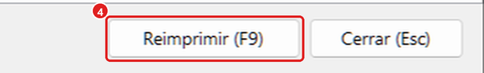
Figura 35. Botón Reimprimir (F9) en la parte de abajo del historial 4Reimprimir (F9)Espere el mensaje del resumen de abajo a la izquierda: en verde, Reimpresión de la boleta N° … enviada a la impresora. (o Boleta N° … enviada a la impresora. si era la primera vez que se imprimía).
Esta forma imprime directamente, sin mostrar antes la boleta en pantalla. Si quiere verla antes, use Reimprimir boleta (siguiente capítulo).
Si la impresión falla, el resumen se pone en rojo y aparece un aviso con el motivo. Revise la impresora y vuelva a intentarlo. Si sigue fallando, consulte a su administrador del sistema.
Para cerrar el historial pulse Esc, o haga clic en Cerrar (Esc).
6.Reimprimir una boleta
Use esta ventana cuando necesite una copia de una boleta que ya se grabó y conozca su número.
6.1Buscar la boleta y reimprimirla
En la pantalla de inicio, haga clic en la tarjeta Imprimir ticket. También puede pulsar F3 o abrir el menú Boletas y elegir Reimprimir boleta.
Se abre la ventana Reimprimir boleta. Ya muestra el número de la última boleta emitida y sus datos.
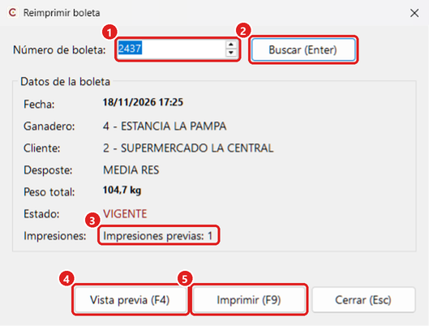
Figura 36. Ventana Reimprimir boleta con el resumen de una boleta 1Número de boleta2Buscar (Enter)3Veces que se imprimió4Vista previa (F4)5Imprimir (F9)Si necesita otra boleta, haga clic en Número de boleta (círculo 1) y escriba su número.
Pulse Enter, o haga clic en Buscar (Enter) (círculo 2).
Compruebe en Datos de la boleta que la fecha, el ganadero, el cliente, el desposte (si aparece) y el peso total sean los que busca. Mire también el Estado: VIGENTE, o ANULADA con el motivo.
Mire Impresiones (círculo 3): dice Aún no se imprimió o Impresiones previas: seguido de cuántas veces se imprimió.
Si quiere ver cómo saldrá la boleta antes de imprimirla, haga clic en Vista previa (F4) (círculo 4). Para cerrar la vista previa pulse Esc.
Haga clic en Imprimir (F9) (círculo 5), o pulse F9.
Lea el mensaje que aparece en la ventana: Boleta N° … enviada a la impresora. o Reimpresión de la boleta N° … enviada a la impresora.
Pulse Esc o haga clic en Cerrar (Esc) para cerrar la ventana.
Si usted cambia el número después de buscar, los datos de la pantalla se borran y los botones Vista previa (F4) e Imprimir (F9) se desactivan hasta que vuelva a pulsar Enter. Así nunca imprime una boleta distinta de la que está viendo.
Si aparece un icono rojo junto al número con el mensaje No existe la boleta N° …, esa boleta no existe. Revise el número. Si la ventana dice Aún no hay boletas emitidas., todavía no se grabó ninguna boleta.
Si la impresión falla, aparece un aviso con el motivo, por ejemplo No hay una impresora predeterminada en este equipo. o La impresora … no está instalada en este equipo. Consulte a su administrador del sistema.
6.2La leyenda REIMPRESIÓN
La primera vez que se imprime una boleta sale limpia. Toda impresión posterior lleva arriba la leyenda REIMPRESIÓN, un número y la fecha y la hora de ese momento. Por ejemplo: REIMPRESIÓN 1 — 05/10/2026 11:42.
El sistema lo hace para que nadie pueda hacer pasar una copia por la boleta original. Cada vez que se imprime, el sistema anota quién la imprimió y cuándo. Es una protección para todos, incluido usted.
6.3Cómo es una boleta
Su administrador define en qué tipo de papel se imprime la boleta en cada computadora: media carta (una hoja de tamaño medio) o ticket (un rollo angosto de 80 mm). Los datos son los mismos en los dos.
Boleta en media carta
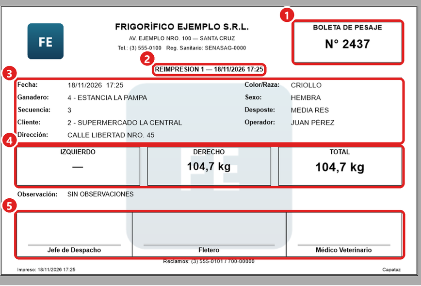
| Círculo | Parte | Qué contiene |
|---|---|---|
| 1 | Encabezado y número | El logo, el nombre y los datos de la empresa, y el recuadro BOLETA DE PESAJE con el número de boleta. |
| 2 | Leyendas | Líneas especiales, como REIMPRESIÓN 1 — fecha y hora. Pueden no aparecer. |
| 3 | Datos del pesaje | Fecha, ganadero, secuencia, cliente, dirección, color o raza, sexo, desposte y operador. Si el pesaje tiene fletero, también sale su nombre. Si su empresa pesa un solo tipo, el desposte no se imprime. |
| 4 | Pesos | Los recuadros IZQUIERDO, DERECHO y TOTAL. Un guion largo (—) quiere decir que ese lado no se pesó (media res). Debajo figura la Observación. |
| 5 | Firmas | Tres espacios para firmar: Jefe de Despacho, Fletero (con su nombre sobre la línea si hay fletero) y Médico Veterinario. Al pie salen el teléfono para reclamos y la fecha y hora de impresión (Impreso:). |
Boleta en ticket
En el ticket están las mismas cinco partes, una debajo de otra (vea la figura siguiente). Los datos del pesaje (círculo 3) salen en lista, uno por renglón, y si el pesaje tiene fletero sale una línea Fletero: con su nombre. Los pesos (círculo 4) son Izquierdo, Derecho y TOTAL. En las firmas (círculo 5), el nombre del fletero, si lo hay, sale bajo la palabra Fletero. Debajo de los pesos salen la Observación, el teléfono para reclamos y el nombre del operador. Al final, la fecha y hora de impresión.
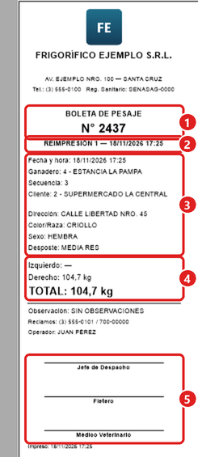
7.Leyendas que puede ver en una boleta
Además de los datos del pesaje, una boleta puede llevar leyendas especiales. Cada una avisa algo importante. Si ve una, no la ignore.
| Leyenda | Cuándo aparece | Qué significa para usted |
|---|---|---|
| REIMPRESIÓN n — fecha y hora | En toda impresión que no es la primera. | Es una copia, no la boleta original. |
| ORIGINAL y COPIA 1, COPIA 2… | Cuando la computadora está configurada para imprimir varias copias de cada boleta. | Cada hoja o ticket trae su propia leyenda. La primera es la ORIGINAL; las siguientes son copias. |
| ANULADA: motivo | En una boleta que un supervisor anuló. En media carta también sale una marca grande de fondo que dice ANULADA; en el ticket, una línea *** ANULADA ***. | La boleta ya no vale. El motivo explica por qué. No se debe entregar como comprobante. |
| PESO SIMULADO — SIN VALOR COMERCIAL | En una boleta pesada con la balanza de práctica. También sale una marca de fondo que dice SIMULADO (en el ticket, una línea *** SIMULADO ***). | Los pesos no son reales y la boleta no tiene valor. |
| IMPORTADA DEL SISTEMA ANTERIOR | En boletas que se trajeron del sistema anterior. | Es una boleta antigua: no se pesó con este sistema. |
| MUESTRA — SIN VALOR | En hojas de prueba de la configuración de la impresora. En lugar del número dice MUESTRA. | No es una boleta real: es una prueba de impresión. |
Una misma boleta puede llevar varias leyendas a la vez. Por ejemplo, una boleta anulada que se vuelve a imprimir lleva ANULADA y REIMPRESIÓN.
8.Cerrar sesión y salir
Cuando termina su turno, o cuando otra persona va a usar la computadora, cierre su sesión. Así lo que haga la otra persona no queda a su nombre.
8.1Cerrar sesión
En la pantalla de inicio, haga clic en el menú Sesión y luego en Cerrar sesión (círculo 2). También puede pulsar Ctrl+Shift+L.
Figura 39. Menú Sesión con las opciones Cerrar sesión y Salir señaladas 2Cerrar sesión3SalirEl sistema pregunta ¿Está seguro de que desea cerrar la sesión?
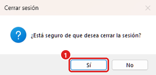
Figura 40. Pregunta de confirmación para cerrar la sesión 1Pulse SíHaga clic en Sí (círculo 1).
El sistema vuelve a la pantalla Iniciar sesión, lista para que entre otra persona.
Si hace clic en No, se queda trabajando con su sesión abierta.
8.2Salir del sistema
En el menú Sesión haga clic en Salir (círculo 3 de la figura anterior del menú).
El sistema se cierra sin preguntar nada.
Cierre siempre el sistema con Salir antes de apagar la computadora. No lo cierre apagando la computadora de golpe.
Si su administrador activó la copia de seguridad al cerrar, el sistema puede tardar unos segundos en cerrarse mientras guarda la copia. Espere a que la ventana se cierre sola y recién entonces apague la computadora.
9.Si algo sale mal
Esta sección reúne los problemas más comunes y qué hacer en cada uno. Cuando la solución dice «consulte a su administrador del sistema», es porque se necesita configurar o reparar algo que el Operador no puede hacer.
9.1La balanza está en rojo o dice «sin datos»
Mire la barra de estado, abajo. Si dice Balanza: sin datos, Balanza: tramas no reconocidas o Balanza: error — …, el sistema no está recibiendo el peso.
Revise que el indicador de la balanza (el aparato con la pantalla de números) esté encendido.
Revise que el cable que va a la computadora esté firme en los dos extremos.
Espere unos segundos: el sistema intenta conectarse solo.
Si sigue en rojo, consulte a su administrador del sistema.
Mientras la balanza esté en rojo no podrá capturar pesos.
9.2El peso no queda estable o no me deja capturar
Mire la línea de guía: ahí está el motivo. Compare con la tabla Mensajes de la línea de guía del capítulo Registrar un pesaje.
Si dice INESTABLE, espere a que la res deje de balancearse.
Si dice Retire el peso de la balanza (esperando retorno a cero)., retire el lado anterior y espere a que la balanza llegue a cero.
Si dice Peso fuera de rango (10,0 a 600,0 kg)., hay una res de menos de 10,0 kg o de más de 600,0 kg en la balanza: avise a su supervisor.
Si dice Elija el fletero de la lista o borre el texto., elija el fletero de la lista o borre el texto del campo Fletero.
Si dice Balanza en MODO SIMULADOR: solo un administrador puede capturar y grabar., la balanza real no está conectada. No pese: avise a su administrador del sistema.
Los mensajes de la guía están explicados en el capítulo Registrar un pesaje.
9.3El ganadero o el cliente no aparece en la lista
Escriba menos letras o una sola palabra del nombre. La búsqueda no distingue mayúsculas ni acentos.
Pruebe con el código, si lo conoce.
Si de verdad no existe, escriba el nombre completo y pulse Enter: se abre el Alta rápida (ver el capítulo Registrar un pesaje).
Para un fletero que no aparece, avise a su supervisor: el Operador no puede crearlo.
Un Operador puede crear ganaderos y clientes, pero no fleteros.
9.4Me equivoqué de peso antes de grabar
Pulse F8 (Borrar pesaje (F8)). Se borran los dos pesos.
Vuelva a pesar la res desde el primer lado.
Si se equivocó en otro dato (ganadero, cliente, sexo…), cámbielo en su campo sin borrar los pesos.
Los datos del animal no se pierden al borrar los pesos.
9.5Me equivoqué después de grabar
El Operador no puede corregir ni anular una boleta ya grabada. Esto protege los pesos: una vez grabados, nadie puede cambiarlos.
Anote el número de la boleta (puede verlo en el Historial de pesajes) y qué está mal.
Avise a su supervisor. Él puede corregir los datos de la boleta (ganadero, cliente, dirección, color o raza, sexo y observación).
Si lo equivocado es el peso o el tipo de desposte, el supervisor anula la boleta. Luego usted vuelve a pesar la res y se graba una boleta nueva con otro número.
Avise apenas note el error, antes de entregar la boleta.
9.6La boleta no se imprimió o la impresora no imprime
Revise que la impresora esté encendida, con papel y conectada a la computadora.
Si acaba de grabar el pesaje, pulse F9. La boleta ya está grabada: no se pierde ni se duplica.
Si se trata de otra boleta, use Reimprimir boleta o el Historial de pesajes.
Si el sistema dice No hay una impresora predeterminada en este equipo. o La impresora … no está instalada en este equipo., o si sigue sin imprimir, consulte a su administrador del sistema.
Volver a imprimir no duplica la boleta: solo sale con la leyenda REIMPRESIÓN si ya se había impreso antes.
9.7Olvidé mi contraseña o mi usuario está bloqueado
Si el mensaje dice Usuario bloqueado temporalmente por intentos fallidos…, espere los minutos que indica el mensaje y vuelva a intentar con calma.
Si no recuerda su contraseña, o si pasaron los minutos y sigue sin entrar, consulte a su administrador del sistema. Él puede restablecer su contraseña; la próxima vez que entre el sistema le pedirá que elija una nueva.
Mientras su usuario esté bloqueado, no use el usuario de otra persona.
9.8Aparece un mensaje de «Error inesperado»
Lea el mensaje: termina con un código de letras y números, por ejemplo Ocurrió un error inesperado. Código: 3F9A12BC.
Anote el código y qué estaba haciendo.
Haga clic en Aceptar y consulte a su administrador del sistema, entregándole el código.
El código ayuda a su administrador a encontrar el problema en el registro del sistema.
9.9La numeración de las boletas salta un número
Es normal. Cuando un supervisor anula una boleta, su número no se vuelve a usar. Puede verla en el Historial de pesajes con el estado ANULADA.
9.10La hora de las boletas no coincide con el reloj
La hora de la barra de estado es la que usa el sistema para las boletas. Si no coincide con la hora real, consulte a su administrador del sistema para que corrija la fecha y la hora de Windows.
9.11El sistema dice «Modo consulta» o pide una clave de activación
El sistema necesita una licencia para funcionar completo. Si en la barra de estado, abajo, ve Prueba: N días, el sistema está en período de prueba y funciona normalmente. Si ve Modo consulta, la prueba terminó: puede ver el historial y reimprimir, pero no puede pesar (Registrar pesaje aparece en gris).
Si al abrir el sistema aparece la ventana Activar Capataz, o si ve Modo consulta, avise a su administrador del sistema. No pulse Probar 15 días ni escriba claves si no se lo indican.
Las boletas ya grabadas no se pierden en modo consulta. Cuando el administrador active el sistema, podrá volver a pesar sin cerrar el programa.
Glosario
- Alta rápida
- forma de crear un ganadero o un cliente nuevo desde la pantalla de pesaje, sin salir de ella.
- Anulada
- boleta que un supervisor dejó sin efecto. Conserva su número, pero ya no vale.
- Balanza estable
- balanza cuyo peso ya no se mueve. El sistema lo indica con la palabra ESTABLE y solo entonces deja capturar el peso.
- Barra de estado
- franja de abajo de la ventana principal. Muestra la empresa, su usuario, el estado de la balanza, la hora y la versión.
- Boleta
- documento que respalda un pesaje. Tiene un número único que no se repite.
- Cerrar sesión
- terminar su turno en el sistema para que otra persona pueda entrar con su propio usuario.
- Cliente
- persona o empresa que recibe la carne.
- Código
- número que el sistema asigna solo a cada ganadero, cliente o fletero. Se puede usar para buscarlos.
- Contraseña
- clave secreta que acompaña a su usuario. Es personal.
- Desposte
- tipo de pesaje de la res: RES COMPLETA (dos lados) o MEDIA RES (un lado).
- Fletero
- persona que transporta la carne. Es opcional y su nombre sale en la boleta.
- Ganadero
- persona que entrega el animal para faenar.
- Historial de pesajes
- lista de las boletas de un día, vigentes y anuladas.
- Línea de guía
- frase de la pantalla de pesaje que le dice qué hacer a continuación.
- Media carta
- tamaño de hoja de la boleta, de la mitad de una hoja carta.
- Media res
- la mitad de un animal faenado. Se pesa en un solo lado.
- Observación
- nota libre de la boleta, hasta 250 letras.
- Operador
- rol de quien pesa, imprime y reimprime boletas. Es el rol de este manual.
- Peso en vivo
- el peso que marca la balanza en este momento, en letra grande en la pantalla de pesaje.
- Reimpresión
- toda impresión de una boleta que no es la primera. Sale con la leyenda REIMPRESIÓN.
- Res completa
- animal faenado entero, que se pesa en dos lados: izquierdo y derecho.
- Retorno a cero
- volver la balanza a cero (2,0 kg o menos) retirando la res, antes de pesar el segundo lado.
- Secuencia
- número de orden del animal de un ganadero en el día: 1, 2, 3…
- Simulador
- balanza de práctica que no pesa de verdad. La barra de estado lo indica con [SIMULADOR] sobre fondo naranja. Con ella el Operador no puede capturar ni grabar.
- Supervisor
- rol de quien corrige y anula boletas y ve los reportes.
- Tarjeta
- cada uno de los tres cuadros grandes de la pantalla de inicio, que abren las tareas principales.
- Ticket
- boleta impresa en un rollo angosto de 80 mm.
- Vigente
- boleta válida, que no fue anulada.
- Vista previa
- imagen en pantalla de cómo saldrá la boleta, antes de imprimirla.
Hoja de teclas rápidas
Imprima esta hoja y péguela junto a la balanza.
Al pesar
| Tecla | Qué hace |
|---|---|
| F5 | Captura el peso del lado izquierdo (con la balanza en ESTABLE) |
| F6 | Captura el peso del lado derecho |
| F8 | Borrar pesaje: descarta los pesos y empieza de nuevo |
| F12 | Grabar el pesaje |
| F9 | Imprimir el último pesaje grabado |
Otras teclas
| Tecla | Qué hace |
|---|---|
| F2 | Registrar pesaje (en la pantalla de inicio) |
| F3 | Reimprimir boleta (en la pantalla de inicio) |
| F4 | Historial de pesajes (en la pantalla de inicio) |
| Enter | Pasa al campo siguiente o acepta |
| Esc | Cierra la ventana o cancela |